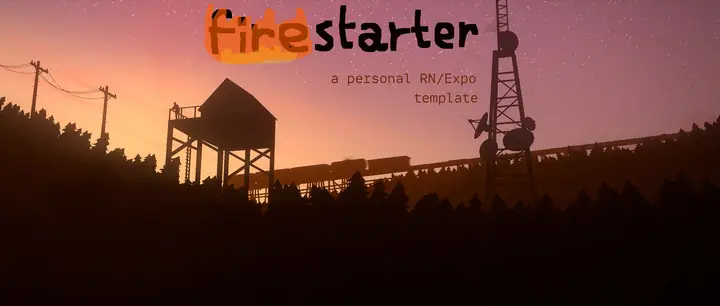
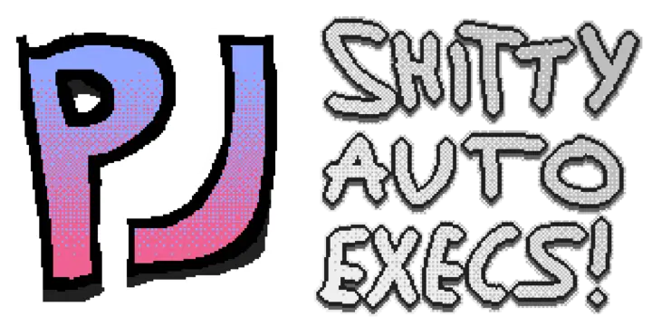
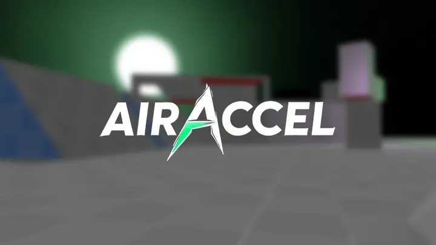

Projects
22 of them. Search or click a tag to narrow it down.

nixeljam
2026My NixOS config. Four machines, one flake, one theme file that everything reads from.
habits
2026A habit tracker that renders as a GitHub-style activity grid, for a screen bolted to my wall.

MakersBNB
2025AirBnB clone, six of us, Flask and Basecoat UI. Test-driven the whole way through.
Acebook
2025Facebook clone in Java and Spring Boot, built as a team. Auth0, Flyway, Thymeleaf, Selenium.

Legacy Console Shaders
2026Makes Minecraft Java look like the Xbox 360 edition. Written for a 2013 mod, works in Iris.

Firestarter
2025My React Native and Expo starter. Expo Router, Zustand, Firebase auth, no stack-building from scratch.
tittyos
2025A deep learning library in C++. Tensors, shapes, dtypes and a working backward pass.

Lockyn
2025A studying app for GCSE and sixth form students. Cross platform, and the UI is the actual work.

AutoPet Feeder
2024An automated pet feeder, built to a real client brief. Raspberry Pi, a servo, a 3D printed shell and an oak lid.
Accessible 3D Platformer
2024An accessibility-focused platformer, built in Godot over six months of weekends for my EPQ.
notITG simfiles
2025Stepmania modcharts for notITG. Lua for the chart logic, GLSL for making the screen misbehave.
CollisionSounds
2025Roblox module that makes objects sound like what they're made of when they hit something.
C# Game Collection
2024Battleships, Tetris and Blackjack in C#. One text-based, one terminal GUI, one WinForms.

game configs
2026Autoexecs for Valve games. Sensible binds, close enough to default that you can still play on someone else's machine.
Left 4 Dead 2 in VR
2025L4D2 VR fork with the abandoned pull requests merged back in, for a hardware project.
punchdrunk.gg
2025A wall of several hundred GIFs that happens to also be my Minecraft server's website.
milotek.dev
2026My hand-written site. Scrolling marquee background, custom fonts, background music with a mute button.
clash royale imposter
2025Guess-the-card game with the full Clash Royale card set. Named after the lyric, obviously.

AIRACCEL
2026Bunnyhop and surf in a browser. Forked into Pixeljam Studios to poke at.
xeetcode
2026Every Leetcode and Neetcode problem I've solved, committed publicly so I can't quietly stop.
furfag.lol
2026A domain I bought for the joke, now doing real work as the host for everything I put on Pages.
CarSwap
2025A Lua script for GTA Online that lets you drive the unreleased DLC cars as if they were normal ones.